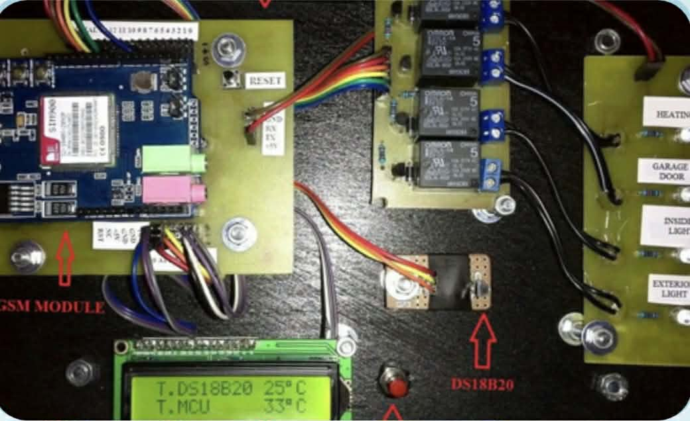

Developed a basic system that guides users through diagnosing common computer issues and provides step-by-step solutions for troubleshooting and maintenance.
Created a simple database-driven application to store, manage, and retrieve student records efficiently, improving organization and accessibility of data.

Designed and built a prototype using Arduino that allows users to control basic home appliances such as lights and fans through sensors or manual input.